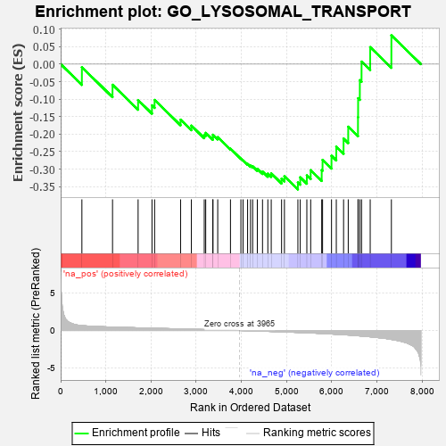
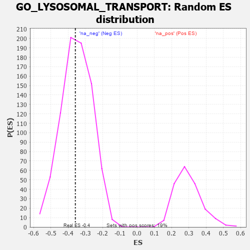

| | | Dataset | 7d |
| Phenotype | NoPhenotypeAvailable |
| Upregulated in class | na_neg |
| GeneSet | GO_LYSOSOMAL_TRANSPORT |
| Enrichment Score (ES) | -0.3580187 |
| Normalized Enrichment Score (NES) | -1.0177457 |
| Nominal p-value | 0.46401986 |
| FDR q-value | 0.85039693 |
| FWER p-Value | 1.0 |
Table: GSEA Results Summary

Fig 1: Enrichment plot: GO_LYSOSOMAL_TRANSPORT
Profile of the Running ES Score & Positions of GeneSet Members on the Rank Ordered List
| PROBE | GENE SYMBOL | GENE_TITLE | RANK IN GENE LIST | RANK METRIC SCORE | RUNNING ES | CORE ENRICHMENT | | 1 | LRP1 | | | 470 | 0.648 | -0.0089 | No |
| 2 | VPS54 | | | 1148 | 0.454 | -0.0590 | No |
| 3 | TRAK1 | | | 1714 | 0.354 | -0.1028 | No |
| 4 | UBXN6 | | | 2021 | 0.302 | -0.1179 | No |
| 5 | USE1 | | | 2079 | 0.294 | -0.1023 | No |
| 6 | VPS4A | | | 2654 | 0.205 | -0.1588 | No |
| 7 | MTM1 | | | 2893 | 0.168 | -0.1758 | No |
| 8 | AKTIP | | | 3178 | 0.125 | -0.2018 | No |
| 9 | AP1G1 | | | 3210 | 0.121 | -0.1964 | No |
| 10 | EPG5 | | | 3368 | 0.094 | -0.2089 | No |
| 11 | VPS16 | | | 3370 | 0.093 | -0.2018 | No |
| 12 | HGS | | | 3476 | 0.080 | -0.2088 | No |
| 13 | VPS52 | | | 3758 | 0.033 | -0.2417 | No |
| 14 | VPS35 | | | 3989 | -0.006 | -0.2702 | No |
| 15 | VPS53 | | | 4036 | -0.014 | -0.2749 | No |
| 16 | VPS51 | | | 4137 | -0.030 | -0.2852 | No |
| 17 | VPS11 | | | 4202 | -0.041 | -0.2900 | No |
| 18 | GAK | | | 4249 | -0.050 | -0.2919 | No |
| 19 | ADRB2 | | | 4352 | -0.068 | -0.2995 | No |
| 20 | LRRK2 | | | 4467 | -0.087 | -0.3071 | No |
| 21 | SNX27 | | | 4585 | -0.115 | -0.3129 | No |
| 22 | CHMP3 | | | 4660 | -0.129 | -0.3122 | No |
| 23 | CLU | | | 4889 | -0.174 | -0.3274 | No |
| 24 | CHMP5 | | | 4952 | -0.188 | -0.3206 | No |
| 25 | MGRN1 | | | 5250 | -0.257 | -0.3380 | Yes |
| 26 | RAB7A | | | 5302 | -0.271 | -0.3234 | Yes |
| 27 | LYST | | | 5448 | -0.307 | -0.3179 | Yes |
| 28 | VPS39 | | | 5533 | -0.329 | -0.3030 | Yes |
| 29 | VAMP7 | | | 5777 | -0.399 | -0.3027 | Yes |
| 30 | LAMP1 | | | 5796 | -0.404 | -0.2736 | Yes |
| 31 | GCC2 | | | 5994 | -0.470 | -0.2619 | Yes |
| 32 | AP3M1 | | | 6100 | -0.506 | -0.2359 | Yes |
| 33 | AP3D1 | | | 6261 | -0.558 | -0.2127 | Yes |
| 34 | NPC1 | | | 6364 | -0.602 | -0.1788 | Yes |
| 35 | CLN3 | | | 6580 | -0.699 | -0.1516 | Yes |
| 36 | ARF1 | | | 6583 | -0.701 | -0.0975 | Yes |
| 37 | SCYL2 | | | 6621 | -0.724 | -0.0459 | Yes |
| 38 | VPS18 | | | 6659 | -0.743 | 0.0071 | Yes |
| 39 | VPS41 | | | 6850 | -0.841 | 0.0485 | Yes |
| 40 | GRN | | | 7319 | -1.194 | 0.0822 | Yes |
Table: GSEA details [plain text format]

Fig 2: GO_LYSOSOMAL_TRANSPORT: Random ES distribution
Gene set null distribution of ES for GO_LYSOSOMAL_TRANSPORT